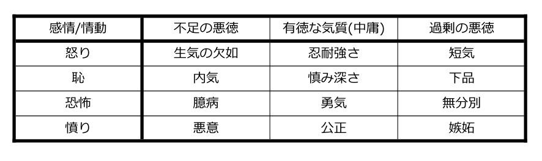

11 窃盗
汝盗むなかれ116
11.1 窃盗:はじめに
上記の聖書の言葉は本質的に絶対主義的なものです。あなたが利用することができる十分な資源がある限りにおいて、盗むべきではないと言っているわけではありません。また、あなたの隣人があなたに親切である場合には、盗むべきではないと言っているわけでもありません。むしろ、それは単にあなたが盗むべきではないと言っているだけで、それで終わりです。一部にはこの特定の戒律と、世界の多くの地域でのキリスト教による社会的慣習への影響との結果のために、窃盗が道徳的な間違いであるというメッセージは、広くいきわたっており、ほとんど議論の余地がありません(少なくとも見た目上では)。たとえば、もしあなたが、誰かが窃盗のために刑務所に送られたという話を聞いた場合、その人が彼または彼女の犯罪のために処罰されるに値するかどうか問うことは、あなたにとって何か変則的なことを必要とするでしょう。この章で私たちは、カント倫理学、功利主義、徳倫理学の主要な規範理論を窃盗の問題に適用します。
11.2 窃盗を定義する
窃盗の倫理に関する章を始めるにあたって、「窃盗」が正確には何を意味するのかを明確にしておくことが重要です。最初は、これはかなり簡単な作業のように見えるかもしれません。窃盗は、同意なしに他人の財産を奪取することにすぎません。実際、英国の交通警察を追ったテレビのリアリティー番組からすれば、この定義は単に哲学の授業だけでなく現実世界のためにも使用されます。車両の窃盗は、TWOC、すなわち「所有者の同意なしに奪取する(taking without owners’ consent)」の例としてしばしば分類されます。
しかし、窃盗がこの定義にぴったりはまるかは必ずしも明確ではありません。たとえば、あなたがある物品を奪取することに所有者が同意したとしても、それを盗むことが可能かどうか疑問に思うかもしれません。元の定義では、これを概念的に不可能であるとして排除します。しかし、意識がもうろうとした(おそらく意志に反して薬を飲まされた)人が、あなたに対して自分の家から価値のある物品を取ることができるという許可を与えたということを考えてみてください。あなたが明示的な許可を得ているにもかかわらず、この言葉による指示に従い、テレビを盗むことは、依然として窃盗行為のようです。
元の定義の2番目の反例として、あなたは他の人よりもカードゲームの腕が優れているものの、この事実を彼らに隠していると想像してください。もしあなたが実際のお金をかけたゲームをして何度も何度も彼らを負かした場合、彼らが自由にゲームに参加したとしても、あなたが彼らのお金を盗んだことが示唆されるのでしょうか?
もちろん、これらの2つの例に対する応答があります。私たちはどちらかが窃盗行為であることを否定するかもしれませんし、そもそも適切な同意が与えられたことを否定するかもしれません — これは特に最初の例では説得力があるようです。しかしながら、私たちはまた、同意の問題ではなく財産の考え方に焦点を当てることによって、窃盗の定義に疑念を投げかけることもできます。たとえば、もしある人が時給制で賃金をもらっているとして、ソーシャルメディアやスポーツの点数をチェックすることに過度の時間を費やしている場合、彼らは雇用主から金銭や時間を盗んでいるのでしょうか?あるいは、もう1つの可能性のある例として、もし私がジョークを作り上げ、他の誰かがそれを改作したならば、彼らは私の同意なしに「財産」を盗んだのでしょうか?これは、たとえば、コメディの分野で真に重要な問題です。ここでも、元の定義は、このような窃盗の例をとらえるためのメカニズムとして擁護可能な場合があります。しかしながら、もしそれが擁護可能であるとしても、それは財産の考え方の広範な読み方のためであり、この概念を自然なものからはかけ離れたものとしています。
最後に、ある人が法的に求められる税金の一部を政府に支払わないという例を考えてみましょう。ここでも私たちは、この人物が自身の金銭的な財産を引き渡すことを拒否したということだけをもって、お金を「盗んだ」のかどうか疑問に思うかもしれません。もしそうであれば、窃盗の元の定義についての私たちの読み方はやや広くする必要があります。
うまくいけば、これらのことすべてが、窃盗と表示されるかもしれないしされないかもしれないさまざまな行為に対するあなたの心を開きます。私たちはこの章では、この節の冒頭で提示した窃盗の大まかな理解を用いながら進みますが、「財産」と「同意」の両方を広範かつ自由に解釈することとします。
11.3 窃盗に関するカント倫理学
第2章では、私たちは創始者のイマヌエル・カントにちなんで名付けられたカント倫理学の構造について概説しました。この節での盗みの問題に対するカント的思考の適用を検討する前に、第2章に取り組んでおくことことが最善でしょう。したがって、ここから先では、この理論の背景知識を持っていることが仮定されています。
ある行為が道徳的に許容されるか(受け入れられるか)どうかを判断するためには、私たちはカントの定言命法の2つの定式化を利用することができます。第1の定式化によれば、もし私たちがある行動の背後にある格率(行動する人の心の中にある、その行動を支持する一般原則)を考慮するならば、私たちはその格率が普遍的な法になることができるかどうかを検討すべきです。第2の定式化によれば、私たちはその行動が他の人を(彼ら自身を目的とするのではなく)目的のための単なる手段として扱うことを含むかどうかを検討すべきです。
カント倫理学が窃盗に関してどのような指針を与えるかを検討するために、1つの窃盗の例を見てみましょう。この例は、窃盗が道徳的に受け入れられることが可能に見えるかどうかという疑問に対して、明らかに「ノー」といって議論の余地なく答えられるようなものです。親が背中を向けているときに子供からおもちゃを盗む人を考えてみましょう。この場合の泥棒は、「あなたが好きなときにはいつでも、他の人の財産を奪う」という格率に基づいて行動しているようです。私たちはこの格率が普遍的な法になることを望まないようです。なぜなら、もしすべての人が好きな時にいつでも他の人の財産を奪うならば、財産の概念全体が破壊されるであろうためです。したがって、そのような格率は、矛盾なしに普遍化することはできないでしょう(約束を破る例によく似ています)。この場合の「財産」という概念の崩壊の理由は、私たちが「所有権」の考え方について考察するならば明らかです。もし誰もが望む時にはいつでもいかなる対象物をも取り上げることができるならば、何かを所有していると本当に言える人はいなくなります。たとえば、もし私が上記のように普遍化された格率に基づいて(道徳的に非難されることなく)あなたの手からペンを取り上げることができるならば、あなたはそのペンをそもそも所有することなくそのペンを持っていたかもしれないという明確な感覚があります。
事実、この記述された窃盗行為は、カントの「定言命法」の第1の定式化に対して失敗するだけでなく、第2の定式化に対しても失敗します。もしあなたが子供から盗んだ場合、あなたがその子供(またはその子供を世話する人)のことを自分の尊厳を持つ自由で合理的な行為主体として扱っていないことは完全に明らかです。逆にあなたは、あなたが望む財産を確保するためというあなた自身の目的のための単なる手段として彼らを使用しています。
カント倫理学が子供たちからおもちゃを盗むことの道徳的な許容性に反対していることは驚くべきことではありません。そのような行動に反対しない理論は、おそらく問題含みなものでしょう。しかしながら、このケースに対するカント的な反応の構造が、実際には重要なものなのです。なぜなら、それは他のケースにも適用できる構造であるためです。説得力を持って道徳的に擁護可能な窃盗の例を考えてみましょう。それはおそらく、お腹を空かせたあなたの家族に食事をさせるために財政的に強力かつ国際的に影響力のあるスーパーマーケットチェーンから盗んだというものです。このケースに関するカント的な見解は、窃盗に対するカント倫理学の広範な反応に関して参考になるでしょう。
この新しい例では、行動の背後にある格率は、「生存するために必要なときにのみ、他の人の財産を奪う」と考えられるでしょう(この例を、私たちができる最も極端で、それゆえに説得力を持って道徳的に擁護可能な形態にしています)。この格率は普遍的な法となることができますか?まあ、今の状況では、そのような格率は普遍化することができないと考える理由があります。1つは、食糧は、水、医療、そして現代の時代ではある程度の金銭的な資産とともに、私たちの生存のために常に厳密に必要とされるものです。確かに、テレビを盗むために家に押し入る人でさえも、潜在的に暴力的な人に借金を返すためにテレビを売ることを計画しているのであれば、そのような格率に基づいて行動しているのかもしれません。そのような普遍化された格率の範囲は、以前の格率で苦しめられていた問題へと私たちを引き戻し、財産の概念がそのような格率の普遍化を切り抜けることができなくなってしまいます。
それでも、「生存するために必要なときにのみ、他の人の財産を奪う」というより具体的な形でこの格率に言及するとしても、私たちはカントがよい気分になれるようなアプローチから離れようとしているということが示唆されるかもしれません。アラスデア・マッキンタイア(1929年-)は、普遍化のテストを適用することに関しては、このシステムは格率を過度に具体化することによって操作され得ることを示唆しています。彼はこう言っています:
私がする必要のあることとは、その格率が私が望むことをするのを可能にする一方で、普遍化された場合には他者がその行為を無効にするようなことをするのを禁じるような方法で、提案された行為を特徴づけることだけである。117
このように、この見解では、私は明らかに、「あなたやあなたの直近の家族が飢えている場合に限って、財政的に強力なスーパーマーケットからパンを奪う」という格率を普遍化することができるでしょう。また、あまり望ましくないことですが、「私の指紋を持つ人は、お腹が空いた時にはいつでも店から盗むことができる」という格率を私は普遍化できるようです。なぜなら、これが普遍的な法になることに相反するものはないだろうからです。私だけが望むものを盗むことができるならば、財産の概念は崩壊しないでしょう。しかしながら、定言命法のこの定式化がより詳細に説明された第2章で言及されているように、このタイプの格率が普遍的な法として理解されるかどうかに関して疑問があります。これは、その格率が私にのみ、またはこの段落の最初の格率の場合には、限られた数の絶望的な人々にのみ適用されるという意味において、その適用が明らかに普遍的ではないからです。したがって、これは、カント主義者がマッキンタイアのスタイルの心配に対して提供できる返答の基礎を形成します。
確かに、普遍化された格率は、それに基づいて行動されるような格率でなければならないので、私たちが(マッキンタイアのアプローチのように)「あなたやあなたの直近の家族が飢えている場合に限って、財政的に強力なスーパーマーケットからパンを奪う」という形態の格率を普遍化しようとすることができるからといって、これは「飢えたときに食べ物を盗む」という格率に従って実際に行動する人を助けるものではないですが、もっと劇的な言葉でこの格率を覆い隠そうとします。したがって、たとえマッキンタイアの批判がそれに対して幾分かの切れ味を持っているとしても、これは依然として非常に少数の可能な窃盗の例しかカバーしません。道徳的な評価は、できるだけ有利に記述された再解釈された格率ではなく、行動を促す実際の格率でなければなりません。
国際的に所有され財政的に強力なスーパーマーケットから盗むというこの例でもっと複雑なのは、他の人を単に目的のための手段として使用し、それによって合理的な行為主体としての彼らの基本的な人間の尊厳を否定することを含むかどうかという疑問です。このようなスーパーマーケットから盗む行為(時に「犠牲者のいない犯罪」と呼ばれることもある行為)の中では、誰が単に目的のための手段として使われているのかがすぐにはわかりません。それはスーパーマーケットの経営陣ですか?それは株主ですか?それは棚に商品を並べるスタッフですか?それは現場の警備員ですか?もしたった1人の取引相手から盗んだ場合、この問題は発生しません。しかしながら、大型スーパーマーケットという現代的な文脈でははるかに複雑になります。特定の窃盗事件を通じて(おそらく実際のケーススタディを用いて)取り組み、それらの事例が定言命法の第2の定式化に抵触するのを避けることができるかどうかを見ることは、あなた自身で検討してみると有益でしょう。
11.4 窃盗に関する行為功利主義と選好功利主義
功利主義の広範な規範的道徳理論の完全な議論は、第1章で行いました。行為功利主義、規則功利主義、選好功利主義という功利主義的理論は、行動の道徳性を決定づけるのは結果であるという見解を持つことによって結びついていますが、この3つの理論は、この中心的な主張を実際にはどのように解釈すべきかに関して若干異なる見方を持っています。規則功利主義とジョン・スチュアート・ミルの考え方については、この章の第5節で議論する予定です。今のところは、私たちの注意を、行為功利主義と選好功利主義のそれぞれの擁護者としてのジェレミー・ベンサムとピーター・シンガーの考え方に集中させていきます。
功利主義の目的論的、帰結主義的および相対主義的性質は、窃盗の例が時に道徳的に受け入れられるという考え方に対してより開かれているように見えるかもしれません。これは、窃盗の例が道徳的に正しいものとなるために必要なのは、良い結果が悪い結果を上回ることだからです。確かに、生きていくために多国籍スーパーマーケットチェーンからパンを盗んだ人の例がまさにそのようなものに見えます。そのため、窃盗に関する行為功利主義や選好功利主義の重要な問題は、「窃盗は正当化され得るか」(これはカント倫理学が直面する重要な疑問です)ではなく、むしろ「功利主義があまりにも多くの場合に窃盗を正当化しているか」です。
以下のような、いくつかの状況を考えてみましょう。
- ジェームズには、特定のクリスマスプレゼントが欲しくてたまらない2人の子供がいます。このプレゼントを買うお金が彼にはありませんが、もし彼が巨大な国際的な小売業者から盗むとしたら、この行動は会社が受ける苦痛よりもずっと大きな子供の喜びにほとんど確実につながるでしょう。
- マシューは音楽のアルバムを違法にダウンロードしてそれを楽しみ、お金を払わずに済ませます。あるいは、彼はその音楽に対して全額を支払い、国際的なポップスター、彼女のレコードレーベル、財政的に強力な音楽小売業者の懐を温めることができます。この場合、有償ダウンロードではなく、違法ダウンロードによってより多くの喜びが生み出されるようです。
- ある強盗団は、世界のすべての銀行口座から1ペニーを盗む能力を持っています。1ペニーを失うという痛みは、たとえ非常に大きな回数を掛け合わせたとしても、最低限度のものです。しかしながら、この窃盗は、この強盗団が抱く荒唐無稽な夢をはるかに超えるほどに彼らを豊かにし、彼らの人生を極度の喜びで満たします。
- あるサッカークラブは、ユースチームの運営を継続し、地元の数百人の子供たちに喜びを提供するために、大きな寄付を必要としています。このクラブのファンであるイモジェンは、億万長者の大邸宅に押し入り、ユースプログラムを救うのに必要な資金を調達するために売り飛ばすことを目的として1万ポンド相当の財産を盗みます。もしこの盗品が大金持ちにとって些細な重要性しか持たない場合、喜びと苦痛の天秤は窃盗犯のほうに傾くかもしれません。
- ブライオニーとロバートは、彼らの車が故障してしまったために、彼らが非常に長い間楽しみにしていたコンサートに行けなくなってしまいそうです。偶然、彼らは近くの車道に駐車してあるロックされていない車に気づきます。もし彼らが車を盗み、コンサートに行き、ガソリンを給油し、車道に戻って駐車しておくとすると(すべて所有者が知ることなしに)、彼らの行動は、彼らに大きな喜びを与えるとともに、車の実際の所有者に全く苦痛を与えないように見えます。
このように記述された5つのケース(そして、私たちはズルをして例を変更するべきではありません!)のすべてで、ベンサム的、快楽主義的な行為功利主義者は、窃盗が道徳的に正しいことを示唆するように強制されると思われます。実際のところ、窃盗をしないことは最も多くの人に最も大きな喜びを生み出すことができないため、それは道徳的に間違っているかもしれません。もし私たちが5つのケースで「喜び」を「選好の満足」に置き換えた場合、状況は主要な点で異なるとは思われないので、選好功利主義者もまた同じ問題に直面しているように見えます。
これに対して、私たちは、行為功利主義者が盗みに対する一般的な指針を提供する「大まかな目安」を持つだろうというベンサムの提案に注意を払う必要があります。たとえば、私たちは結果を確実に把握することができないため、窃盗をやる気にならない方がよいでしょう。
たとえば、もしジェームズが捕らえられた場合、成功すれば生じたかもしれない喜びよりもはるかに多くの苦痛が彼の行動から生じるでしょう。事実、現実の世界では、盗まれた品物は、窃盗犯が抽象的に認識できるものを超えた感傷的な価値を隠していることがしばしばあるため、犠牲者が被る苦痛について窃盗犯はしばしばまったく見当もつきません(これは4番目と5番目のケースに最も関係があるように思われます)。たとえば、コロラドスプリングスでiPadを盗んだ窃盗犯は、最近死去した父親と一緒に写った写真を失った8歳の少年の苦痛をおそらく考慮していませんでした。118したがって、たとえ個々の窃盗行為が所与の状況において最大限の喜びを生み出すと私たちが考えるかもしれないとしても、私たちは分析における過信に対して用心深くあるべきであり、その可能な行動に伴うつらい結果を軽視してはなりません。
異論として、道徳的に正当化される盗みを許すという点で功利主義者が過度に見境がなくなるのを防ぐことに対して、そのような「大まかな目安」で十分であるかどうかを問うことができます。功利主義が、一般に窃盗に反対するように警告するという点において十分なものを提供していないと考える理由は十分あります。上述の状況(および同様の事例)のいくつかでは、大まかな目安に関連した前の段落で言及された理由のために、窃盗は望ましくないと見なされるかもしれませんが、もし喜びや選好の満足の総量が道徳を決定するすべてであるならば、結論が窃盗を明確に指し示すような状況が数多くあります。私たちは、結果を比較的容易に予測することのできる多くのそのような状況をあなたが想像することができると確信しています。窃盗が間違っていることについてあまり絶対主義になりたくないと望むことと、潜在的に膨大な数の状況において窃盗が道徳的に要求されるほどに自由主義になることとの間には違いがあるのかもしれません。
行為功利主義者と選好功利主義者は、盗みに関連する心理的コストにもっと注意を払うべきであることを示唆することによって、この問題について最後の抵抗をするかもしれません。もし私たちが金銭と怒りに関係する直接の苦痛だけを考えるならば、犠牲者の苦痛は完全には説明されないでしょう。さらに、財産が盗まれることや家に強盗が入ることの恐れからしばしば生じる心理的な苦痛も認識しなければなりません。この心理的な苦悩は非常に深刻であり、窃盗の結果としての大きな喜びすら上回る可能性があります。そして、潜在的に道徳的に正当化可能なある1つの状況で窃盗行為をすることは、道徳的正当性がより疑わしいか、または明らかに存在しない第2、第3または第4の状況で、その人が窃盗をしやすくさせるかもしれません。
おそらく、もしある人が窃盗に慣れてしまい、その結果として共感が薄れてくれば、長期的な窃盗のコストは、(この犯罪者の性格や将来の行動に関係するために)当初の考えよりもはるかに高くなるかもしれません。この考え方は、第14章で議論されているように、カントの動物に対する間接的な関心と共通しています。
行為功利主義や選好功利主義が窃盗の問題に及ぼす影響に関するあなたの見解が何であれ、功利主義者が窃盗を道徳的に批判したり道徳的に支持している事例の範囲を理解し、擁護することができると明確にするために、あなた自身の事例を考え出し、その事例に理論を適用してみる、というのはやってみる価値があるでしょう。
11.5 窃盗に関する規則功利主義
もしあなたが功利主義を擁護したいと思っていても、行為功利主義と選好功利主義が窃盗の事例に反論する内容に退屈している場合、規則功利主義があなたに楽観的になる理由を与えてくれるかもしれません。思い出してほしいのは、規則功利主義者は、道徳的な行動とは一組の規則によって推奨される行動であると示唆しており、その一組の規則とは、もし順守された場合、最も多くの人の最も大きな良さを促進するものです。一見したところでは、窃盗を禁止する規則は、特に上述のように盗みに関連する潜在的な心理的コストを考えれば、最も多くの人に最も大きな良さを生じさせる一組の規則に含まれるよい候補になると思われるかもしれません。
実際には、もし私たちが「最高の一組の規則」についてもっと広く考えると、飢えているか資源が不足している人に対して適切な食糧供給を要求するルールと、医療と住宅の提供に関する同様のルールがあるのがもっともらしいと思われます。もちろん、そのような規定は無料ではないでしょうが、苦境にある人に費やされた1ポンドは、経済的に満足している人に費やされた1ポンドよりも大きな将来の幸福を促進する可能性が高いことを考えると、最高の一組の規則は十分な税金を徴収するための規定を含む可能性が高いです(ただし私たちは、この考え方をもっと深く、おそらくあなた自身の例をもって考えるよう促しておきます)。
これまでの考え方にもかかわらず、最高の一組の規則は「必要なとき」に窃盗を認め、非絶対主義者を満足させる方法で「良い」窃盗と「悪い」窃盗とを区別することが示唆されるかもしれません。最も多くの人の最も大きな幸福を促進することと一貫しているものの、窃盗の個々の事例とその道徳的立場を「間違う」ことのないような規則を書くのはどの程度簡単なのかは、やはり、あなたが検討するのが有益でしょう。ここでは、第1章で論じたような強い規則功利主義と弱い規則功利主義との区別を見直しておく価値があります。
最後に、規則功利主義を窃盗の文脈に適用することに関連して、「厳しい要求」の異議の様式の影響を検討することは価値があります。第1章から、ミルの危害原理を思い出してください:
文明化された共同体のいかなる成員に対しても、彼の意志に反して、正当に権力を行使することができる唯一の目的とは、他者に対する危害の防止である。彼自身の利益は、肉体的なものでも道徳的なものでも、十分な根拠とはならない。119
もし危害原理が、最も多くの人の最も大きな幸福を促進するような規則についての情報を与えてくれるならば、幸福を促進する目的で資源を再分配するために私的な個人から資産を取り上げることを許す規則は存在しないでしょう。心に留めておくべき有益な例としては、貸金庫の中に永久に保管してある宝石であり、もしその宝石が盗まれ売却された場合にはもっと大きな幸福が促進されるような方法で使用することができます。そのような行動 — それは、見た目上は、より大きな良さのためにロビン・フッドのスタイルで私的な個人から盗み出すように見えます — は、ミル自身の危害原理とうまく一致するようには見えません。どんなに少なく見ても、それは、他人への危害を防ぐという概念について特に興味深い解釈が必要となるでしょう。
この全体の問題自体は、規則功利主義者が私たちの心の中で私たちに具体的な行動を判断してほしいと望むような規則を実際に修正することの難しさを強調しており、これは実際にこの理論を窃盗に適用することの難しさに関して規則功利主義者にとっての別の問題を提起します。第4節で概説した事例1–5に戻って、規則功利主義者がそのようなケースで何を示唆するかを自分自身に尋ねてみることは有益かもしれません — 規則功利主義者の答えは、彼らの立ち位置を、多かれ少なかれ、行為功利主義と選好功利主義者の答えよりも魅力的なものにしますか?
11.6 窃盗に関する徳倫理学
規範的な道徳理論としてのアリストテレスの徳倫理学は第3章で探究されており、この章で論じられているすべての理論と同様に、ここでのすべての事柄はそこで提起された問題に照らしながら読むことが重要です。
徳倫理学者は個々の行動の道徳的地位には関心がなく、むしろその行動をする人物の性格の特性や気質に関心があります。アリストテレスは、人生のさまざまな領域の中で有徳な中庸を見つけ出すために理性を使用し、以下のように、有徳と非有徳(悪徳)な性格の特性を示唆しました。


したがって、公正さと勇気と有徳な忍耐に基づいて窃盗行為をする者は、道徳的と見なされる一方で、無分別、下品さ、短気に基づいて窃盗行為をする者は、道徳的とはみなされないでしょう。これは窃盗に対する徳倫理学の適用について興味深いことを明らかにします。徳倫理学によれば、2人の異なる人々によって行われた全く同じ行為が、道徳的な観点からは異なって見られることがあります。
スーパーマーケットから一斤のパンを盗み、近くの通りにいる空腹のホームレスの女性に渡したという行為を取り上げてみましょう。もしある人がこの行為を利己的な自己満足から行った場合、彼らは過剰の悪徳に従って行動しています。しかし、もし誰か他の人がまったく同じ窃盗行為をしているものの、公正さと寛大さに基づいてそうしているのであれば、彼らは有徳な方法で行動しています。この例は過度に単純化されていますが、要点は明確であると思います。
徳倫理学に関するより大きな懸念の1つは具体的な指針の欠如であり、この懸念は、窃盗のような応用倫理的な問題に対して、徳倫理学からの助言を求める段になると、最も深刻になると思われます。結局のところ、私たちが一斤のパンを盗むことは公正で寛大な性格の気質に基づいているのか、それとも無分別と利己的な自己満足を反映しているのかを、私たちはどのように決めたらいいのでしょうか?特定の状況において有徳な行動の過程がどのようになるのかを、私たちはどうやったら確信できますか?
1つの可能性は、有徳な人々の行動を指針として見ることですが、これは主観性の厄介な問題を引き起こします。たとえば、もし私が聖アウグスティヌスを有徳と見なした場合、私は彼の窃盗に対する完全な忌避を中庸の代表として見ることになるでしょう。バートランド・ラッセル(1872–1970年)は、アウグスティヌスについて次のように述べています:
彼は空腹ではなく、彼の両親は家にもっと良い梨の木を持っていたにもかかわらず、彼は自分と同い年くらいの数人の仲間と一緒に、隣人の梨の木から実を奪ったようだ。彼は、その後の人生を通じて、これをほとんど信じられないほどの邪悪な行為とみなし続けた。もし彼が空腹であったり、梨を手に入れる他の手段がなかったりしたら、それはそこまで悪いことではなかっただろう。しかし、実際にそうであったように、その行為は純粋ないたずらの1つであり、邪悪そのものを愛することに動機づけられていた。120
些細な理由で盗むことは、非有徳的な行動の極地に見えます。しかしながら、もし私が、架空の人物ロビン・フッドを、貧しい人々に与えるために金持ちから奪うという意志のために、有徳な人の範例とみなすならば、私は、寛大さという有徳な性格の特性がどのような行動を起こすのかについて、異なる見解を持っているのかもしれません。あるいは、より極端には、もし私が有名な架空の荒波の海賊を有徳な個人を代表するものとしてみなすならば、私の見解はさらに異なるものとなるでしょう。私たちは、これらの人々のうちの誰が窃盗に関して有徳な指導を求めるのに適切な人々であるかを、どのようにして決めることができますか?アリストテレスは実践的な理性(フロネシス)と人間の開花に言及することができますが、これは深刻な弱点となってしまうかもしれません。
さらに、有徳な人のアドバイスが衝突するように見えるときや、徳それ自身が衝突するように見えるときに、どのように行動するのか疑問に思えるかもしれません。盗みの行為は、勇気と利己性の両方、または勇敢さと無分別の両方であるように見えるかもしれません。いかにして行動するかを見つけ出すためには実践的な理性を用いることが必要ですが、やはり、この言語はまだ役に立たないほどに曖昧であるとして、徳倫理学の批判者からは助けにならないと思われるかもしれません。
11.7 メタ倫理学と窃盗
AQAでは、第7章で説明したさまざまなメタ倫理学の理論が、詳述された応用倫理学の問題に対してどのように適用されるのかを理解する必要があります。窃盗は、それらの問題のうち、私たちが検討していく最初の問題です。以下では、第7章の理論をある程度は理解していると仮定して、メタ倫理学の理論がこの問題にどのように関連するかについての指針を提供します。以下の指針の多くは、残りの3つの章で議論されている他の応用倫理的な問題にも容易に適用できます。
11.7.1 認知主義と実在論
この分野における認知主義と実在論の組み合わせは、窃盗についての道徳的主張が、少なくともある時には真に存在する道徳的な性質によって真実とされるような信念を表現する、真偽の区別が可能な命題であることを必然的に伴います。功利主義者にとっては、個々の行為が倫理的に受け入れられるかに関する道徳的主張は、喜び、幸福、選好の満足などの自然の性質によって真実とされます。直観主義者にとっては、良さの非自然的な性質は、私たちの窃盗に関する道徳的な主張のいくつかを真実にするでしょう。
11.7.2 認知主義と反実在論
道徳的錯誤理論家は、窃盗の倫理に関する私たちの道徳的主張は真実となるように意図されているが、その道徳的主張を真実とさせるいかなる道徳的性質も存在しないため真実を達成することは決してできない、と考えています。重要なのは、道徳的錯誤理論家が「窃盗が少なくとも時々は間違っていることがある」という主張を支持することができないからといって、これは彼らが盗みを愛していることを伴うものではないということです。道徳的錯誤理論家は、多くの機会において盗みに反対するような、あるいは実際には他の場面では盗みを支持するような非道徳的な理由を持っているかもしれません。窃盗に関与しない理由は道徳的な理由だけであるのではなく、彼らがしばしば窃盗の考えに反対するときには、法的および社会的/個人的な理由もまた要因となるでしょう。たとえば、他の人の財産権を気にかける道徳的錯誤理論家は、窃盗に強く反対するかもしれません。
11.7.3 非認知主義と反実在論
この本で検討されている単純な非認知主義者によると、窃盗に関する私たちの道徳的発話は、真偽の区別が可能なものではありません。なぜなら、それらは信念の表出ではないからです。それらは感情や、承認や不承認といった真偽の区別が不可能な態度の表現です。したがって、情緒主義や指令主義のような理論によれば、「窃盗は間違っている」というような文は、窃盗に向けた否定的な感情的態度を表しているか(情緒主義)、私たちは人々が盗むことを望んでいないことを明らかにするものです(指令主義)。
あなたが好む非認知主義者の理論がどちらであっても、非認知主義的立場は、道徳的発話が世界についての何らかの真実を明らかにしておらず、世界の特徴を記述しようとすらしていないという考え方へのコミットメントによって定義されます。
したがって、私たちは、この議論を使うときには窃盗犯を道徳的に間違ったものとして批判することはできません(道徳的錯誤理論家の主張にいくらか類似しています)。しかしながら、もし私たちが指令主義を採用するならば、ある窃盗犯が自身の窃盗の正当性を擁護する一方で、窃盗が一般的に誤りであることについて話す時には、私たちは少なくともこの窃盗犯の矛盾について批判することができるかもしれません。これにもかかわらず、情緒主義や指令主義のような観点を採用することに関心を持つ人たちにとっての大きな懸念の1つは、それが窃盗の道徳的な正しさをめぐる道徳的議論の価値を安っぽくし、取り除いてしまうということです。なぜなら、私たちは、実在論者がやりたいと思う方法で、そしてほとんどの人が望むような方法で、私たちの倫理的主張を真実または虚偽であると擁護することができないからです。
11.8 まとめ
多くの人は、窃盗が受け入れ不可能であることに関する絶対的な道徳観(カントが擁護すると考えられるような類の観点)を避けたいと望むでしょう。功利主義も徳倫理学も、窃盗を絶対に禁じているわけではありませんが、それぞれ独自の問題があります。これらの問題についてのあなたの理解を示すために、あなた自身が考えたさまざまなケースに対して規範理論を適用することは、各理論を悩ませるさまざまな微妙な問題についてあなたが自信を持って書くことを可能にしてくれる戦術です。
11.9 学生によくある間違い
- 理論の個別の章で論じたようなさまざまな道徳理論の長所と短所を適用しない。
- 窃盗についてのあまりに狭い理解を持っている。(実際と架空の)幅広いケースについて議論することをお勧めします。
- ある理論が窃盗の問題にどのように適用されるかを説明するときに、あまりにも多くのことを仮定する — 理解を示し、重要な用語を使用して、完全な説明を与えましょう。
検討すべき問題
- 税金を政府に支払わないことは窃盗の一例ですか?
- あなたは自分自身の満足のいく窃盗の定義を作り出せますか?
- (2)であなたが到達した定義は、アイデアを盗むという考え方にどのように適合しますか?
- 一度盗んでしまったことは、あなたがもう一度盗む可能性を増やしますか?
- 窃盗に伴う心理的苦痛を測定することは可能ですか?
- 盗難に対する絶対的な禁止は擁護できるでしょうか?できる、あるいはできないならば、それはなぜですか?
- あなたが有徳であると考える人には、窃盗をした過去がありますか?
- 最も多くの人の最も大きな良さを促進するための最高の一組の規則は、窃盗を絶対的に禁止するルールを含んでいますか?
- あなたが情緒主義者または指令主義者であるならば、窃盗の倫理を議論する価値はありますか?
- 錯誤理論家は、窃盗の道徳性について何を言うでしょうか?
11.10 重要な用語
定言命法
普遍化
真偽の区別が可能である
11.11 参照文献
Bible, New International Version, freely available at https://www.biblegateway.com/
Leon, K., ‘Family Seeks Stolen iPad with Photos of Deceased Father’, Fox21 News (3 October 2014), freely available at http://fox21news.com/2014/10/03/family-seeks-stolen-ipad-with-photos-of-deceased-father/
MacIntyre, Alasdair, A Short History of Ethics (London: Routledge, 2002), https://doi.org/10.4324/9780203131121
[「西洋倫理思想史」(第1版の翻訳)、菅豊彦[ほか]訳、九州大学出版会、1985–1986年]
Mill, J. S., On Liberty (London: Longman, Roberts, Green & Co., 1869), freely available at freely available at http://www.econlib.org/library/Mill/mlLbty1.html
[「自由論」斉藤悦則訳、光文社古典新訳文庫、2012年]
Russell, Bertrand, History of Western Philosophy (Woking: Unwin Brothers, 1947), freely available at https://archive.org/stream/westernphilosoph035502mbp#page/n3/mode/2up
[「西洋哲学史1–3」市井三郎訳、みすず書房、1970年]
Exodus 20:15, https://www.biblegateway.com/passage/?search=Exodus+20↩
A. MacIntyre, A Short History of Ethics, p. 126.↩
K. Leon, ‘Family Seeks Stolen iPad with Photos of Deceased Father’, http://fox21news.com/2014/10/03/family-seeks-stolen-ipad-with-photos-of-deceased-father/↩
J. S. Mill, On Liberty, http://www.econlib.org/library/Mill/mlLbty1.html↩
B. Russell, History of Western Philosophy, p. 364, https://archive.org/stream/westernphilosoph035502mbp#page/n3/mode/2up↩